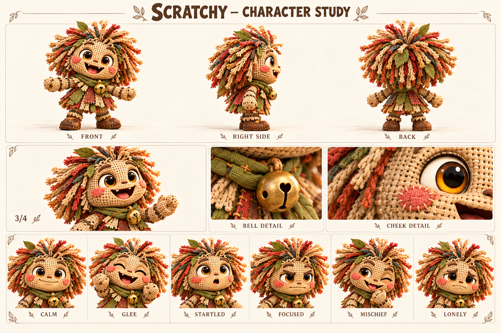

Чего хочет
Найти компанию, которая захочет возвращаться на его тропу.
Превращает любую встречу в игру, потому что больше всего хочет, чтобы встреча продолжилась.
Живое текстильное существо, первый новый знакомый Тиша и участник дружеской гонки.

Мешковина; янтарные глаза; розовые стежки; лоскутные волосы; листья; оливковый шарф; один бубенчик.
Палитра: Крем / ржавый / олива / латунь.
Царап помнит лес как последовательность звуков: сухая ветка хрустнула, шишка прокатилась, кто-то рассмеялся за кустами. Кто сшил его и как он ожил, пока остаётся открытым вопросом. В рабочей биографии он долго обитал у старой тропы, собирал потерянные лоскутки и придумывал им назначения. Заплата могла стать флажком, лист — шапкой, а две палочки — воротами для гонки.
Один латунный бубенчик на шарфе помогает ему объявлять о себе, хотя раньше он чаще выскакивал внезапно и пугал прохожих. Царап понял, что внимание легче получить шуткой, чем прямой просьбой остаться. Поэтому он предлагает ещё один забег, ещё одно правило, ещё один смешной обход. Когда остальные уходят, он иногда думает, что просто придумал недостаточно интересную игру.
В демо он зовёт Тиша из кустов, знакомится с ним и позже соревнуется на тропе. Его радость от встречи важнее результата гонки. Будущая история должна дать ему опыт обычного совместного дела: починить ограду или донести свёрток, не развлекая компанию каждую минуту. Он обнаружит, что его зовут снова даже тогда, когда он устал и тихо сидит рядом.
Найти компанию, которая захочет возвращаться на его тропу.
Поверить, что дружба не требует постоянно быть забавным и полезным развлечением.
Быть забытым после того, как игра закончится.
Меняет правила на ходу и скрывает огорчение новой шуткой.
Изобретательность, открытость, умение оживить скучное дело и заметить чужое смущение.
Громче всех зовёт играть, но тихо спрашивает, придут ли ещё.
Темп и ритм. Пружинисто, с короткими повторами и внезапной паузой перед важной просьбой.
Слова и построение фразы. А давай, ещё раз, шур-шур, придумал, по-честному. Звукоподражания дозированно.
Юмор. Неожиданные сравнения и правила для обыденных вещей; не высмеивает слабость.
Под давлением. Болтает быстрее, затем замолкает, если его шутка не помогла.
Как проявляет заботу. Предлагает игру, в которой друг может уверенно сделать первый шаг.
Чего избегать. Не делать бесконечным клоуном, детской пищалкой или обманщиком ради победы.
| Ситуация | Реплика или действие |
|---|---|
| Зов | Эй, мастер указателей! А у тебя есть указатель на приключение? |
| Предложение | До того камня наперегонки. Правила простые. На этот раз! |
| Проигрыш | Ты первый! Я второй. Получается, оба пришли. |
| Граница | Стой. Если тебе не смешно, я перестану. |
| Признание | Я ещё игру придумал… Хотя можно просто посидеть. |
| Дружба | Завтра тоже заглянешь? Я буду здесь. |
| Подпись на листе | Состояние | Актёрская задача |
|---|---|---|
| CALM | Спокойствие | Небольшая закрытая улыбка, бубенчик неподвижен. |
| GLEE | Ликование | Открытый смех, руки вверх, лоскуты распушаются. |
| STARTLED | Удивление | Круглый рот, глаза шире, тело замирает. |
| FOCUSED | Сосредоточенность | Брови сведены, мягкие ладони держат предмет аккуратно. |
| MISCHIEF | Озорство | Один глаз прищурен, голова наклонена, улыбка без злорадства. |
| LONELY | Одиночество | Взгляд вниз, плечи опущены; не превращать в страшную заброшенную куклу. |
Движение: Движение упругое, но ступни имеют вес. Волосы и лоскуты запаздывают за поворотом; бубенчик звенит на акценте, не непрерывно.
| План | Что показывает |
|---|---|
| Общий план спереди | Силуэт, лицо, одежда, положение ступней; без потери главных признаков. |
| Боковой ракурс | Глубина фигуры, профиль лица, предметы на ремнях и посадка одежды. |
| Вид со спины | Причёска, крепления, рюкзак либо панцирь; признаки не зеркалятся. |
| Средний план в три четверти | Лицо вместе с характерным жестом и позой корпуса. |
| Крупные детали | Материал и узнаваемые предметы; особенности лица, уха, руки или панциря. |
| Шесть эмоциональных портретов | Взгляд, брови, рот и положение головы; у существ также усики, крылья и поза. |
История о тихой дружбе и поиске происхождения нескольких заплат без обязательного раскрытия создателя.